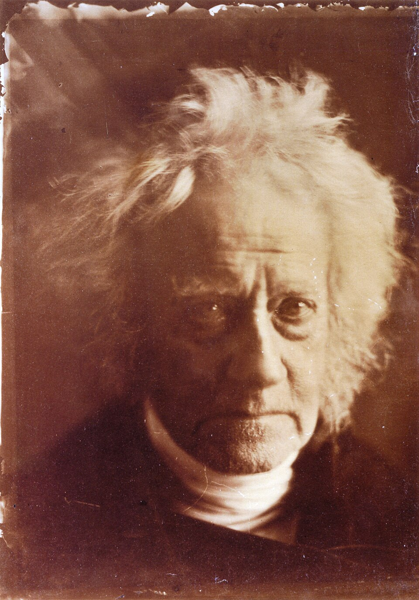
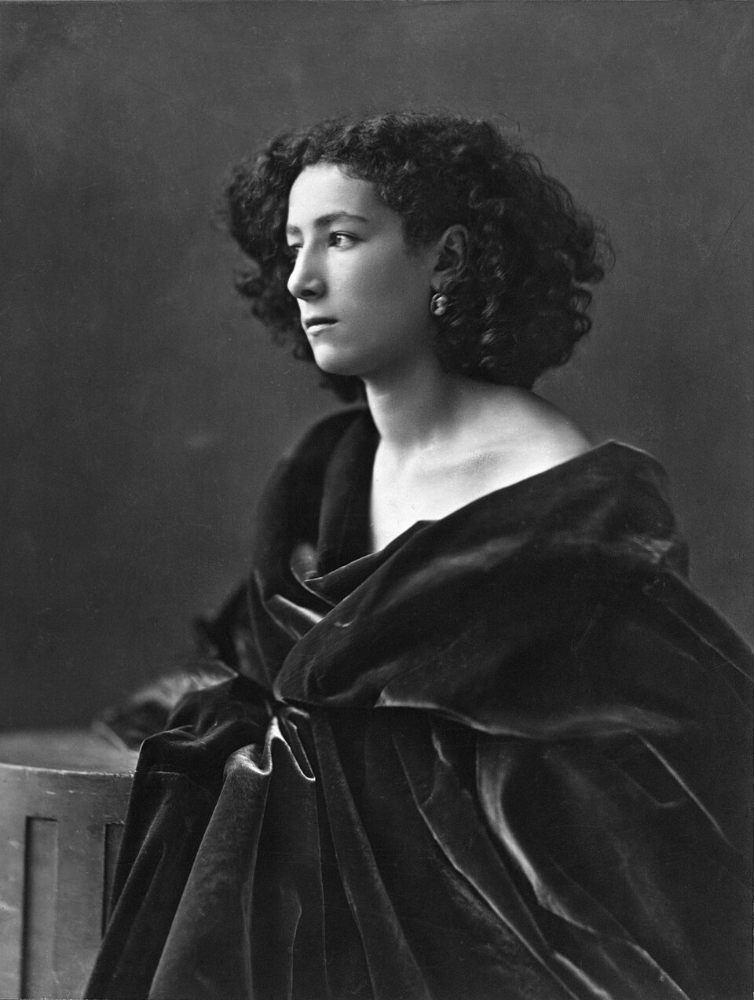

03 / 03 — An unstable portrait
No one.
Everyone.
Everything is in place.
Nobody is home.
Bring the fragments together. There is no correct face to find. Drag a fragment, or focus it and use the arrow keys.
Seven fragments. One possible face.



I know these eyes.
I have never met this person.
One face.
Many possible people.
The eyes, nose, and mouths are the nodes. Move them and the connections follow. The map changes with your hands.
Return to the face